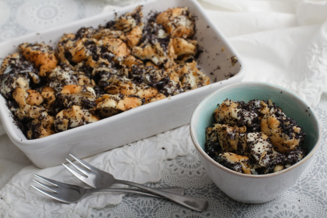

Mákos guba
A mákos guba jellegzetes magyar édesség, de ismert Németország keleti felén és Lengyelországban is.
Eredetileg karácsonyi ünnepi étel volt, és abban a hiszemben sütötték, hogy a sokszemű mák sok szerencsét, sok pénzt hoz az új esztendőben.
Napjainkban már egész évben készítik ezt a desszertet. Leginkább szikkadt vizes kiflit használnak az elkészítése során, de a hagyományos módon elkészítve kelt tésztából készül.
Régen még vékonyra nyújtva a kemencében sülő kenyér mellett sütöttek, szárítottak, később már sütőben, tepsiben.

Hozzávalók
- 10db szikkadt kifli
- 1 liter tej
- 1 csomag vaníliás cukor
- 15 evőkanál darált mák
- 7 evőkanál porcukor
Elkészítés
- A mákos guba elkészítéséhez a kifliket 1 cm-es karikákra vágjuk.
- A tejet a vaníliás cukorral felforraljuk.
- A kiflikarikákat a forró tejjel leöntjük, majd leszűrjük, és kinyomkodjuk belőle a tejet.
- Egy nagyobb jénai tálba egy réteg kiflit teszünk, majd porcukorral elkevert darált mákot szórunk rá, megint kiflit és megint mákot teszünk bele, amíg elfogynak a hozzávalók. Ha marad még mák, megszórjuk vele a tetejét is.
- Ha szeretnénk, akkor 7-8 percre berakhatjuk 180 fokra előmelegített sütőbe. Összemelegítve, sütve is nagyon finom, de ha nem akarjuk sütni, a mákos guba úgyis fogyasztható.